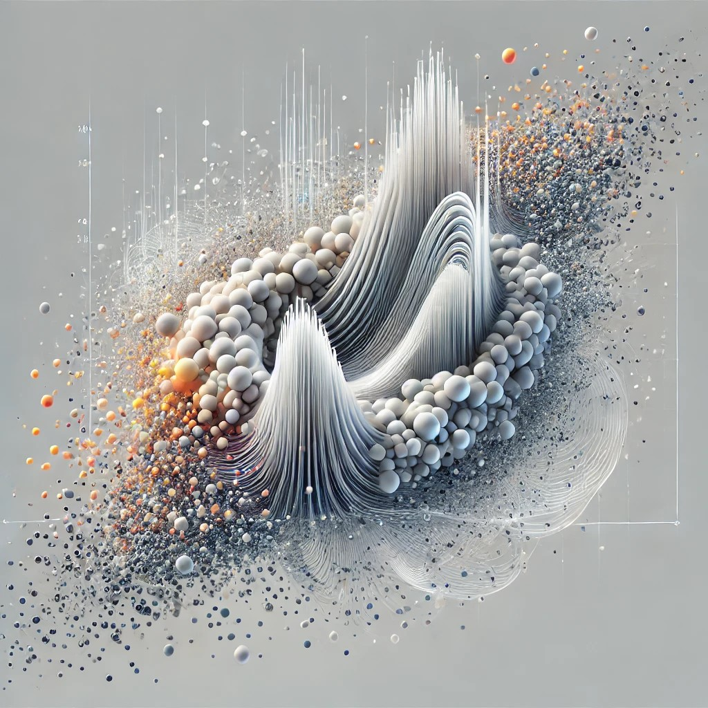
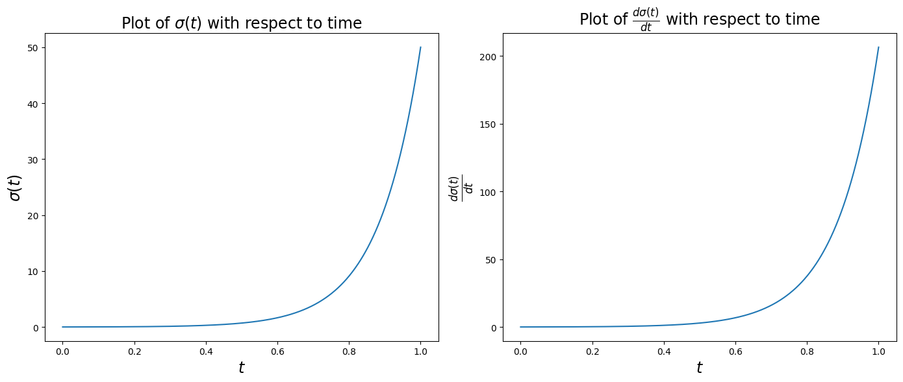
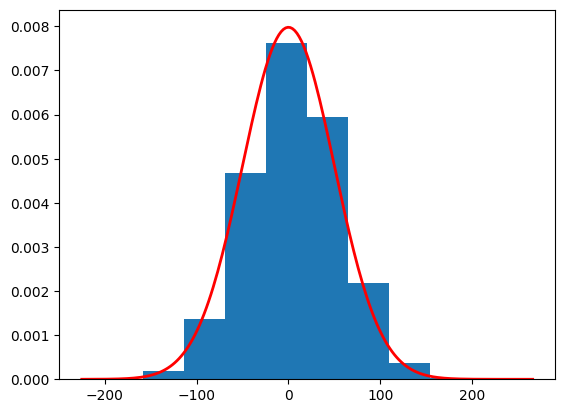
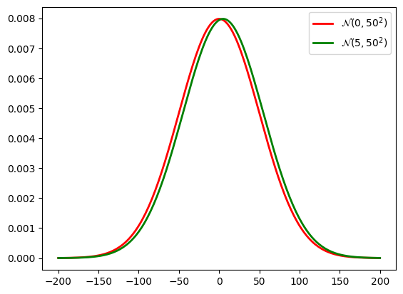
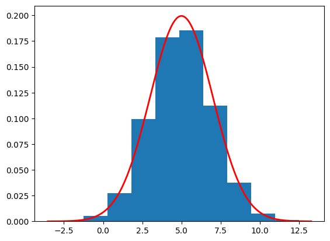

A tutorial to understand the VE Diffusion model using a toy example.
diffusion
tutorial
Author
Andreas Makris
Published
December 17, 2024

In the previous post we have seen the VP Diffusion model DDPM. An other popular type of Diffusion models are the Variance Exploding (VE) SDEs SDE Diffusion:
A common choice of the variance function is \(\sigma(t)=\sigma_{\text{max}}\left(\frac{\sigma_{\text{max}}}{\sigma_{\text{min}}}\right)^t\), with \(\sigma_{\text{min}}=0.01\) and \(\sigma_{\text{max}}=50\). Then, we have that:
Let’s first understand how \(\sigma(t)\) and \(\frac{d\sigma(t)}{dt}\) change with time.
import numpy as npimport matplotlib.pyplot as pltnum_timesteps =1000dt =1/num_timestepssigma_min =0.01sigma_max =50sigmas = sigma_min * (sigma_max / sigma_min) ** np.linspace(0, 1, 1000)d2sigma_dt =2* sigmas **2* (np.log(sigma_max) - np.log(sigma_min))# Create a figure and two subplots side by sidefig, axes = plt.subplots(nrows=1, ncols=2, figsize=(14, 6))# First subplotax1 = axes[0]# Example plot (replace with your data)ax1.plot(np.linspace(0, 1, 1000), sigmas)# Set title and x-label for the first subplotax1.set_title(r'Plot of $\sigma(t)$ with respect to time', fontsize=17)ax1.set_xlabel(r'$t$', fontsize=17)ax1.set_ylabel(r'$\sigma(t)$', fontsize=17)# Second subplotax2 = axes[1]# Example plot (replace with your data)ax2.plot(np.linspace(0, 1, 1000), np.sqrt(d2sigma_dt))# Set title and x-label for the second subplotax2.set_title(r'Plot of $\frac{d\sigma(t)}{dt}$ with respect to time', fontsize=17)ax2.set_xlabel(r'$t$', fontsize=17)ax2.set_ylabel(r'$\frac{d\sigma(t)}{dt}$', fontsize=17)# Adjust layout to prevent overlapplt.tight_layout()# Display the plotsplt.show()

Now let’s consider \(p_0(x)=\mathcal{N}(5,4)\) and propagate data samples \(x(0)\) to \(x(1)\). The distribution of \(x(1), p_1(x)\) is some noise distribution we will use to generate data samples, by propagating in reverse time.
import torchimport numpy as npimport matplotlib.pyplot as pltclass VE_SDE_DIFF:def__init__(self, num_timesteps):self.num_timesteps = num_timestepsself.dt =1/num_timestepsself.sigma_min = torch.tensor(0.01)self.sigma_max = torch.tensor(50)self.sigmas =self.sigma_min * (self.sigma_max /self.sigma_min) ** torch.linspace(0, 1, num_timesteps)self.d2sigma_dt =2*self.sigmas **2* (torch.log(self.sigma_max) - torch.log(self.sigma_min))self.forward_term = torch.sqrt(self.d2sigma_dt *self.dt)def forward_diff(self, x0): B = x0.shape[0] x = torch.zeros((self.num_timesteps+1,B)) x[0] = x0for t inrange(self.num_timesteps): x[t+1] = x[t] +self.forward_term[t] * torch.randn(B)return xve_sde = VE_SDE_DIFF(1000)x0 = torch.randn(100000) *2+5x = ve_sde.forward_diff(x0).numpy()plot_sample = x[1000]print(f"Estimated mean is {np.mean(plot_sample)}")print(f"Estimated std is {np.std(plot_sample)}")plt.hist(plot_sample, density=True)# Define parameters for the normal distributionmean =0.0std =50.0# Create a range of x valuesxmin, xmax = plt.xlim()x = torch.linspace(xmin, xmax, 200).numpy()# Compute the normal PDF: (1/(σ√(2π))) exp(-(x-μ)²/(2σ²))pdf = (1/(std * np.sqrt(2*np.pi))) * np.exp(-0.5*((x - mean)/std)**2)# Plot the PDF lineplt.plot(x, pdf, 'r', linewidth=2)plt.show()
Estimated mean is 5.073878288269043
Estimated std is 50.15424346923828

Note that for large variance small differences in the mean are negligible. Thus, \(\mathcal{N}(5,50^2)\approx\mathcal{N}(0,50^2)\). Consider the case of images, that pixels are normalised between -1 and 1, then the approximation is very good.
x = np.linspace(-200, 200, 200)# Compute the normal PDF: (1/(σ√(2π))) exp(-(x-μ)²/(2σ²))pdf_1 = (1/(std * np.sqrt(2*np.pi))) * np.exp(-0.5*((x -0.0)/std)**2)pdf_2 = (1/(std * np.sqrt(2*np.pi))) * np.exp(-0.5*((x -5.0)/std)**2)# Plot the PDF lineplt.plot(x, pdf_1, 'r', linewidth=2, label=r'$\mathcal{N}(0,50^2)$')plt.plot(x, pdf_2, 'g', linewidth=2, label=r'$\mathcal{N}(5,50^2)$')plt.legend()plt.show()

Now we will use the exact score to perform the reverse diffusion. We assume that \(p_1(x)=\mathcal{N}(5,50)\) (since we know the mean of \(p_0(x)\) we can use it instead of 0). Then,
We use the exact score to reverse the diffusion process.
import torchimport numpy as npimport matplotlib.pyplot as pltclass VE_SDE_DIFF:def__init__(self, num_timesteps):self.num_timesteps = num_timestepsself.dt =1/num_timestepsself.sigma_min = torch.tensor(0.01)self.sigma_min2 =self.sigma_min **2self.sigma_max = torch.tensor(50)self.sigmas =self.sigma_min * (self.sigma_max /self.sigma_min) ** torch.linspace(0, 1, num_timesteps)self.sigmas2 =self.sigmas **2self.d2sigma_dt =2*self.sigmas **2* (torch.log(self.sigma_max) - torch.log(self.sigma_min))self.forward_term = torch.sqrt(self.d2sigma_dt *self.dt)def forward_diff(self, x0): B = x0.shape[0] x = torch.zeros((self.num_timesteps+1,B)) x[0] = x0for t inrange(self.num_timesteps): x[t+1] = x[t] +self.forward_term[t] * torch.randn(B)return xdef reverse_diff(self, num_samples): samples = torch.zeros((self.num_timesteps+1,num_samples)) samples[self.num_timesteps] = torch.randn(num_samples) *50+5for t inrange(self.num_timesteps-1,-1,-1): drift =self.d2sigma_dt[t] *self.score(samples[t+1],t+1) *self.dt diff =self.forward_term[t] * torch.randn(num_samples) samples[t] = samples[t+1] + drift + diffreturn samplesdef score(self,x,t): numerator =5- x denomenator =4+self.sigmas2[t-1] -self.sigma_min2return numerator / denomenatorve_sde = VE_SDE_DIFF(1000)samples = ve_sde.reverse_diff(10000).numpy()plot_sample = samples[0]print(f"Estimated mean is {np.mean(plot_sample)}")print(f"Estimated std is {np.std(plot_sample)}")plt.hist(plot_sample, density=True)# Define parameters for the normal distributionmean =5.0std =2.0# Create a range of x valuesxmin, xmax = plt.xlim()x = torch.linspace(xmin, xmax, 200).numpy()# Compute the normal PDF: (1/(σ√(2π))) exp(-(x-μ)²/(2σ²))pdf = (1/(std * np.sqrt(2*np.pi))) * np.exp(-0.5*((x - mean)/std)**2)# Plot the PDF lineplt.plot(x, pdf, 'r', linewidth=2)plt.show()
Estimated mean is 5.011462688446045
Estimated std is 1.9858821630477905

If you want a sanity check, try modifiying the code above, so that the we sample from \(\mathcal{N}(0,50^2)\) at \(t=1\). In a real-world example we will not know the mean of \(p_0(x)\), which is the same as the mean of \(p_1(x)\), and we use \(0\) instead. Note that the score function should not be modified (in a real-world example the score is estimated with a neural network)!
You can also check what happens if you ignore \(\sigma_{\text{min}}^2\) in the denominator of the score function. Spoiler alert: it is that small that makes no difference.